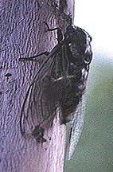

「
かんぜんへんたい
」と「
ふかんぜんへんたい
」
漢字(かんじ)では
「
完全変態
」
、
「
不完全変態
」
と書(か)きます。
むずかしそうな言葉(ことば)ですね。
でも、昆虫がすきなあなたはきっと知(し)っていることなのです。
たとえば…「セミ」と、「チョウ」・「ナナホシテントウ」をくらべてみましょう。
クマゼミの幼虫(ようちゅう)
クマゼミの蛹(さなぎ)?
クマゼミの羽化(うか)
クマゼミの成虫(せいちゅう)

木の根(ね)からしるをすいます
蛹を見たことはあるかな
幼虫から成虫へ…?
木の幹(みき)からしるをすいます
ゴマダラチョウとオオムラサキの幼虫
キチョウの蛹(さなぎ)
蛹から成虫へ(ナナホシテントウ)
ツバメシジミの成虫
春から秋までエノキの葉(は)をたべます
ふつうは、じっと動(うご)きません
幼虫のときとは、ぜんぜんちがう形(かたち)になりました
ツバメシジミの成虫は、おもに花のみつをすいます
「
完全変態
」をする昆虫は「蛹(さなぎ)」のときが
あります
。でも、「
不完全変態
」をする昆虫は「蛹(さなぎ)」のときが
ありません
。
蛹(さなぎ)のときがあるかないかの違(ちが)いが、わかりましたか。
でも、両方(りょうほう)をくらべると
もっと大切(たいせつ)な違(ちが)い
があるのがわかりますか…?
次(つぎ)のページを見る前(まえ)に、自分(じぶん)の思(おも)ったことをメモしておきましょう。
できましたか。
では、その違いとは…